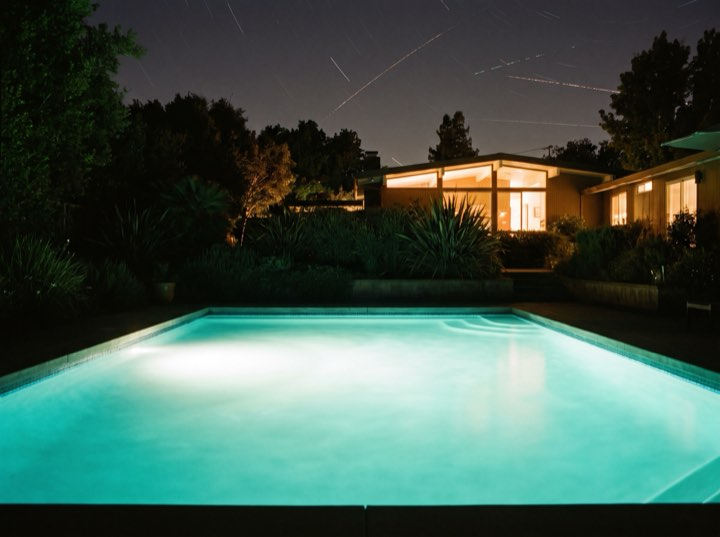

Booking next season now
Gunite pools, spas and full outdoor living builds. Before anything is signed you see your own garden rendered with the pool in it: your fence, your trees, your afternoon shade.
Services
A pool is rarely just a pool. Most of our projects are the whole back garden reconsidered.
Engineered, steel-reinforced and built to last decades. Any shape, because gunite doesn't come out of a mould.
Integrated spas, spillovers, and the quiet engineering that keeps them warm without a ruinous bill.
Hardscape, outdoor kitchens, pergolas and lighting, designed together with the pool rather than bolted on after.
Older pools brought back: resurfacing, new tile and coping, and modern equipment that halves the running cost.
Process
Roughly nine months if you start in autumn, and considerably longer if you start in May with everyone else.
We visit, measure and talk about how you'd actually use it. Free, and no obligation to go further.
Your garden, rendered, with the pool in it. Change it as often as you like before there's a contract.
We handle drawings, engineering and the city. This is the stage that quietly takes months.
Excavation to first fill, typically eight to twelve weeks. We teach you the equipment and stay on call after.
In your garden
Every one of these started as a lawn and a fence. The design is drawn into your garden before anything is dug.




Then now is the conversation. Spring and summer builds are booked over the winter, and the design and permit stage runs longer than anyone expects.
Free design consultations. 3D rendering included at no cost, no obligation.